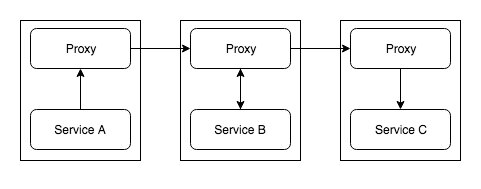
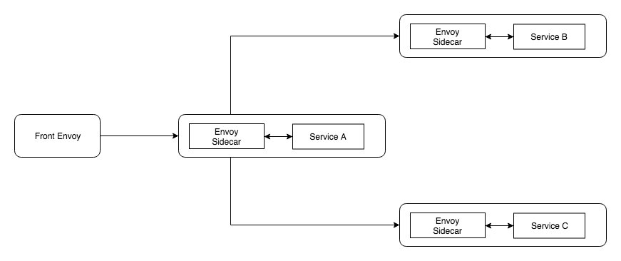
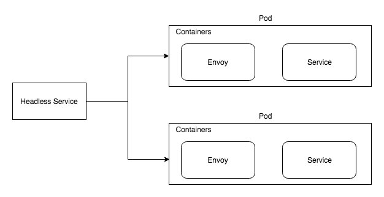

<!DOCTYPE html>

<html lang="zh-cn"><head>
  <meta charset="utf-8">
  
  <title>使用 Envoy 搭建 Service Mesh | 云原生社区</title>
  

  <!-- mobile responsive meta -->
  <meta name="viewport" content="width=device-width, initial-scale=1, maximum-scale=1">
  <meta name="description" content="本文将简单的讨论下我们经常听到的 Service Mesh 是什么，以及如何使用 Envoy 构建服务网格(Service Mesh),使用速率限制服务来减轻客户端对 API 资源的消耗。">
  
  <meta name="author" content=" 云原生社区">
  <meta name="generator" content="Hugo 0.65.3" />

  <!-- plugins -->
  
  <link rel="stylesheet" href="/plugins/bootstrap/bootstrap.min.css">
  
  <link rel="stylesheet" href="/plugins/slick/slick.css">
  
  <link rel="stylesheet" href="/plugins/fontawesome/font-awesome.min.css">
  
  <link rel="stylesheet" href="/plugins/animate/animate.css">
  
  <link rel="stylesheet" href="/plugins/venobox/venobox.css">
  

  <!-- Main Stylesheet -->
  
  <link rel="stylesheet" href="/scss/style.min.css" media="screen">

  <!--Favicon-->
  <link rel="shortcut icon" href="/images/favicon.png " type="image/x-icon">
  <link rel="icon" href="/images/favicon.png " type="image/x-icon">
  <meta property="og:image" content="https://cloudnative.to/images/favicon.png">
  <!--Algolia-->
  <link rel="stylesheet" href="https://cdn.jsdelivr.net/npm/docsearch.js@2.6.3/dist/cdn/docsearch.min.css">
  <!--Twitter card-->
  <meta name="twitter:card" content="summary_large_image" />
  <meta name="twitter:site" content="Cloud Native Community|云原生社区" />
  <meta name="twitter:creator" content="@CloudNativeCN" />
  <meta property="og:url" content="https://cloudnative.to/blog/service-mesh-with-envoy-101/" />
  <meta property="og:title" content="使用 Envoy 搭建 Service Mesh" />
  <meta property="og:description" content="本文将简单的讨论下我们经常听到的 Service Mesh 是什么，以及如何使用 Envoy 构建服务网格(Service Mesh),使用速率限制服务来减轻客户端对 API 资源的消耗。" />
  <meta property="og:image" content="https://cloudnative.to/images/blog/006tNbRwgy1fxhzfu4w8vj31400u0naq.jpg" />
</head>
<body>
<!-- header -->


<div style='margin:0 auto;width:0px;height:0px;overflow:hidden;'>
     
</div>
<header>
  

  <!-- navigation -->
  <div class="navigation bg-white position-relative">
    <div class="container">
      <nav class="navbar navbar-expand-lg navbar-light bg-white">
        <a class="navbar-brand" href="/"></a>
        <button class="navbar-toggler border-0" type="button" data-toggle="collapse" data-target="#navigation"
          aria-controls="navigation" aria-expanded="false" aria-label="Toggle navigation">
          <span class="navbar-toggler-icon"></span>
        </button>

        <div class="collapse navbar-collapse text-center" id="navigation">
          <ul class="navbar-nav ml-auto">
            <li class="nav-item">
              <a class="nav-link" href="/"></a>
            </li>
            
            
            <li class="nav-item dropdown">
              <a class="nav-link dropdown-toggle" href="#" role="button" data-toggle="dropdown" aria-haspopup="true"
                aria-expanded="false">
                社区
              </a>
              <div class="dropdown-menu" >
                
                <a class="dropdown-item" href="/team">管理委员会</a>
                
                <a class="dropdown-item" href="https://i.cloudnative.to/academy/">云原生学院</a>
                
                <a class="dropdown-item" href="/city">城市站</a>
                
                <a class="dropdown-item" href="https://i.cloudnative.to/community/">社区资料</a>
                
              </div>
            </li>
            
            
            
            <li class="nav-item dropdown">
              <a class="nav-link dropdown-toggle" href="#" role="button" data-toggle="dropdown" aria-haspopup="true"
                aria-expanded="false">
                兴趣小组
              </a>
              <div class="dropdown-menu" >
                
                <a class="dropdown-item" href="https://i.cloudnative.to/kubernetes/">Kubernetes SIG</a>
                
                <a class="dropdown-item" href="https://i.cloudnative.to/istio/">Istio SIG</a>
                
                <a class="dropdown-item" href="https://i.cloudnative.to/envoy/">Envoy SIG</a>
                
                <a class="dropdown-item" href="https://i.cloudnative.to/dapr/">Dapr SIG</a>
                
                <a class="dropdown-item" href="https://i.cloudnative.to/oam/">OAM SIG</a>
                
                <a class="dropdown-item" href="https://i.cloudnative.to/stability/">稳定性 SIG</a>
                
                <a class="dropdown-item" href="https://i.cloudnative.to/observability/">可观察性 SIG</a>
                
                <a class="dropdown-item" href="https://i.cloudnative.to/edge/">边缘计算 SIG</a>
                
              </div>
            </li>
            
            
            
            <li class="nav-item dropdown">
              <a class="nav-link dropdown-toggle" href="#" role="button" data-toggle="dropdown" aria-haspopup="true"
                aria-expanded="false">
                博客
              </a>
              <div class="dropdown-menu" >
                
                <a class="dropdown-item" href="/categories/kubernetes">Kubernetes</a>
                
                <a class="dropdown-item" href="/categories/service-mesh">Service Mesh</a>
                
                <a class="dropdown-item" href="/categories/envoy">Envoy</a>
                
                <a class="dropdown-item" href="/categories/oam">OAM</a>
                
                <a class="dropdown-item" href="/categories/%E5%BC%80%E6%BA%90%E7%A4%BE%E5%8C%BA">开源社区</a>
                
                <a class="dropdown-item" href="/blog">所有</a>
                
              </div>
            </li>
            
            
            
            <li class="nav-item dropdown">
              <a class="nav-link dropdown-toggle" href="#" role="button" data-toggle="dropdown" aria-haspopup="true"
                aria-expanded="false">
                资料
              </a>
              <div class="dropdown-menu" >
                
                <a class="dropdown-item" href="http://landscape.opensourcecloud.cn/">云原生生态图景</a>
                
                <a class="dropdown-item" href="https://github.com/cloudnativeto/academy">云原生学院分享归档</a>
                
                <a class="dropdown-item" href="/kubebuilder">Kubebuilder 中文文档</a>
                
                <a class="dropdown-item" href="/envoy">Envoy 中文文档</a>
                
              </div>
            </li>
            
            
            
            <li class="nav-item dropdown">
              <a class="nav-link dropdown-toggle" href="#" role="button" data-toggle="dropdown" aria-haspopup="true"
                aria-expanded="false">
                关于
              </a>
              <div class="dropdown-menu" >
                
                <a class="dropdown-item" href="/about">介绍</a>
                
                <a class="dropdown-item" href="/contact">联系</a>
                
              </div>
            </li>
            
            
            
            <li class="nav-item">
              <a class="nav-link" href="/contribute">投稿</a>
            </li>
            
            
            
            <li class="nav-item">
              <a class="nav-link" href="/job">招聘</a>
            </li>
            
            
          </ul>

          
          

          
          <!-- search -->
          <div class="search px-4">
            <button id="searchOpen" class="search-btn"><i class="fa fa-search text-dark"></i></button>
            <div class="search-wrapper">
              <form action="/search">
                <input class="search-box form-control" id="js-algolia-btn" name="s" type="search" placeholder="输入搜索词">
              </form>
              <button id="searchClose" class="search-close"><i class="fa fa-close text-dark"></i></button>
            </div>
          </div>
          
          
          <!-- get start btn -->
          <a href="/contact" class="btn btn-primary hover-ripple">加入我们</a>
          
        </div>
      </nav>
    </div>
  </div>
  <!-- /navigation -->
</header>
<!-- /header -->

	<!-- page title -->
<section class="section bg-cover overlay" style="background-image: url('/'),url('/'),url('/images/backgrounds/page-title-5.jpg');">
  <div class="container">
    <div class="row">
      <div class="col-12">
        <h2 class="text-white mb-3">使用 Envoy 搭建 Service Mesh</h2>
        <!-- breadcrumb -->
        
        <p class="text-white">本文将简单的讨论下我们经常听到的 Service Mesh 是什么，以及如何使用 Envoy 构建服务网格(Service Mesh),使用速率限制服务来减轻客户端对 API 资源的消耗。</p>
      </div>
    </div>
  </div>
</section>
<!-- /page title -->

	

<!-- blog details -->
<section class="section">
  <div class="container blog">
    <div class="row">
      <div class="col-lg-8">
        <!-- post thumb -->
        <div class="position-relative mb-5">
          
           <div class="card-type"><a href="/categories/service-mesh">Service Mesh</a></div>
        </div>
        <div class="card-meta mb-2">作者  <strong class="text-dark">Arvind Thangamani</strong>
          
          译者
          <strong class="text-dark">
          詹叶](<a href="https://github.com/heisenbergye">https://github.com/heisenbergye</a>)
          </strong>
          
            发表于 <strong class="text-dark">2018年11月23日</strong></div>
        <hr>
        <div class="content">
          <p>本文为翻译文章，<a href="https://medium.com/@dnivra26/service-mesh-with-envoy-101-e6b2131ee30b">点击查看原文</a>。</p>
<p>本文将简单的讨论下我们经常听到的 “Service Mesh” 是什么，以及如何使用 “Envoy” 构建服务网格(Service Mesh)。</p>
<h3 id="什么是-service-mesh">什么是 Service Mesh?</h3>
<p>Service Mesh 可以比作是微服务结构中的通信层。每个服务之间来往的所有请求都将通过网格。每个服务都有自己的代理服务，所有这些代理服务共同组成了“服务网格”(Service Mesh)。所以假如一个服务想要和另一个服务通信，他不是直接和这个目标服务通信的，他会先把请求路由给自己本地的代理，再由代理把请求路由到目标服务。从本质上讲，每个服务实例都只知道自己本地的代理，并不知道外面世界是什么样的。</p>
<p></p>
<p>当你在谈论 “Service Mesh” 的时候，你肯定也会听到 “Sidecar” 这个词，“SideCar” 就是用于每个服务实例中的代理，每个 “SideCar” 负责一个服务中的一个实例。</p>
<p></p>
<h3 id="service-mesh-能带来什么">Service Mesh 能带来什么?</h3>
<ol>
<li>服务发现</li>
<li>可观测性（Metrics）</li>
<li>限速</li>
<li>熔断</li>
<li>流量迁移</li>
<li>负载均衡</li>
<li>认证与授权</li>
<li>分布式追踪</li>
</ol>
<h3 id="envoy">Envoy</h3>
<p>Envoy 是一个用 C++ 编写的高性能代理。绝不是一定要使用 Envoy 来搭建 “Service Mesh” ，你也可以使用其他代理，如 Nginx、Traefik 等……但是本文我们将使用 Envoy 。</p>
<p>好，让我们来搭建一个由3个服务组成的 “Service Mesh”。我们要搭建的“Service Mesh”的结构如下所示，每个服务旁都设置有一个代理。</p>
<p></p>
<h3 id="front-envoy">Front Envoy</h3>
<p>“Front Envoy” 是边界代理即前端代理，常常会用它来做 TLS 终止，认证，生成请求头部，等……</p>
<p>我们先一起来看下“Front Envoy”的配置。</p>
<div class="highlight"><pre style="color:#f8f8f2;background-color:#272822;-moz-tab-size:4;-o-tab-size:4;tab-size:4"><code class="language-yaml" data-lang="yaml">---
<span style="color:#66d9ef">admin</span>:
  <span style="color:#66d9ef">access_log_path</span>: <span style="color:#e6db74">&#34;/tmp/admin_access.log&#34;</span>
  <span style="color:#66d9ef">address</span>: 
    <span style="color:#66d9ef">socket_address</span>: 
      <span style="color:#66d9ef">address</span>: <span style="color:#e6db74">&#34;127.0.0.1&#34;</span>
      <span style="color:#66d9ef">port_value</span>: <span style="color:#ae81ff">9901</span>
<span style="color:#66d9ef">static_resources</span>: 
  <span style="color:#66d9ef">listeners</span>:
    - 
      <span style="color:#66d9ef">name</span>: <span style="color:#e6db74">&#34;http_listener&#34;</span>
      <span style="color:#66d9ef">address</span>: 
        <span style="color:#66d9ef">socket_address</span>: 
          <span style="color:#66d9ef">address</span>: <span style="color:#e6db74">&#34;0.0.0.0&#34;</span>
          <span style="color:#66d9ef">port_value</span>: <span style="color:#ae81ff">80</span>
      <span style="color:#66d9ef">filter_chains</span>:
          <span style="color:#66d9ef">filters</span>: 
            - 
              <span style="color:#66d9ef">name</span>: <span style="color:#e6db74">&#34;envoy.http_connection_manager&#34;</span>
              <span style="color:#66d9ef">config</span>:
                <span style="color:#66d9ef">stat_prefix</span>: <span style="color:#e6db74">&#34;ingress&#34;</span>
                <span style="color:#66d9ef">route_config</span>: 
                  <span style="color:#66d9ef">name</span>: <span style="color:#e6db74">&#34;local_route&#34;</span>
                  <span style="color:#66d9ef">virtual_hosts</span>: 
                    - 
                      <span style="color:#66d9ef">name</span>: <span style="color:#e6db74">&#34;http-route&#34;</span>
                      <span style="color:#66d9ef">domains</span>: 
                        - <span style="color:#e6db74">&#34;*&#34;</span>
                      <span style="color:#66d9ef">routes</span>: 
                        - 
                          <span style="color:#66d9ef">match</span>: 
                            <span style="color:#66d9ef">prefix</span>: <span style="color:#e6db74">&#34;/&#34;</span>
                          <span style="color:#66d9ef">route</span>:
                            <span style="color:#66d9ef">cluster</span>: <span style="color:#e6db74">&#34;service_a&#34;</span>
                <span style="color:#66d9ef">http_filters</span>:
                  - 
                    <span style="color:#66d9ef">name</span>: <span style="color:#e6db74">&#34;envoy.router&#34;</span>
  <span style="color:#66d9ef">clusters</span>:
    - 
      <span style="color:#66d9ef">name</span>: <span style="color:#e6db74">&#34;service_a&#34;</span>
      <span style="color:#66d9ef">connect_timeout</span>: <span style="color:#e6db74">&#34;0.25s&#34;</span>
      <span style="color:#66d9ef">type</span>: <span style="color:#e6db74">&#34;strict_dns&#34;</span>
      <span style="color:#66d9ef">lb_policy</span>: <span style="color:#e6db74">&#34;ROUND_ROBIN&#34;</span>
      <span style="color:#66d9ef">hosts</span>:
        - 
          <span style="color:#66d9ef">socket_address</span>: 
            <span style="color:#66d9ef">address</span>: <span style="color:#e6db74">&#34;service_a_envoy&#34;</span>
            <span style="color:#66d9ef">port_value</span>: <span style="color:#ae81ff">8786</span>
</code></pre></div><p>Envoy 的配置主要包括：</p>
<ol>
<li>侦听器 Listeners</li>
<li>路由 Routes</li>
<li>集群 Clusters</li>
<li>端点 Endpoints</li>
</ol>
<p>我们逐个来看。</p>
<h3 id="侦听器listeners">侦听器（Listeners）</h3>
<p>Envoy 实例中可以运行一个或多个侦听器。第9-36行，配置了&quot;http_listener&quot;的地址和端口，每个侦听器也可以有一个或多个网络过滤器（filter）。这些过滤器可以实现路由、TLS终止、流量迁移等…… 我们这里用到的过滤器 “envoy.http_connection_manager” 是内嵌的过滤器之一，Envoy 还有其他几种<a href="https://www.envoyproxy.io/docs/envoy/latest/configuration/network_filters/network_filters#config-network-filters">过滤器</a>。</p>
<h3 id="路由routes">路由（Routes）</h3>
<p>第22-34行，为 filter 配置路由规范 &ldquo;local_route”，声明应该从哪些域接受请求和一个用来与每个请求匹配的路由匹配器，并将请求发送到适当的集群。</p>
<h3 id="集群clusters">集群（Clusters）</h3>
<p>Clusters 是 Envoy 将流量路由到上游服务的规范。</p>
<p>第41-50行，定义的 “Service A”，它是唯一要前端代理 “Front Envoy” 建立通信的上游服务。</p>
<p>“connect_timeout” 是在返回503之前获得与上游服务的连接的时间限制。</p>
<p>通常一个服务不会仅仅只有一个实例，Envoy 支持<a href="https://www.envoyproxy.io/docs/envoy/latest/intro/arch_overview/load_balancing#supported-load-balancers">多种负载均衡算法</a>来分发流量。这里我们使用最基础的轮询算法。</p>
<h3 id="端点endpoints">端点（Endpoints）</h3>
<p>“hosts” 定义我们要将流量路由到的 “Service A” 的多个实例，在本文的演示案例中只有一个实例。</p>
<p>如果你注意到第48行，正如我们讨论的，我们不是直接访问 “Service A” ，而是和 “Service A” 中的其中一个实例的 Envoy 代理通信，再把流量路由给本地的实例。</p>
<p>你也可以声明服务名称，如 “Service A”，它将返回服务的所有实例 ，类似Kubernetes中的Headless Service。</p>
<p>这里我们使用的是客户端的负载均衡。Envoy 会缓存 “Service A” 所有的 “hosts”，每隔5秒钟刷新一次实例列表。</p>
<p>Envoy 支持主动和被动的负载均衡。如果想启用健康检查功能，需要在 cluster 的配置中配置健康检查。</p>
<h3 id="其他">其他</h3>
<p>第2-7行，配置管理服务器，用于查看配置、修改日志级别、查看状态，等等……</p>
<p>第8行，“static_resources”，意味着我们要手动加载所有配置，我们也可以动态加载配置，后面我们再来看看是怎么做的。</p>
<p>当然除了上文示例配置 Envoy 还有很多配置项，但我们的目标不是尝试所有可用的配置，而是要从最小配置开始。</p>
<h3 id="service-a">Service A</h3>
<p>以下是 “Service A” 的 Envoy 配置。</p>
<div class="highlight"><pre style="color:#f8f8f2;background-color:#272822;-moz-tab-size:4;-o-tab-size:4;tab-size:4"><code class="language-yaml" data-lang="yaml"><span style="color:#66d9ef">admin</span>:
  <span style="color:#66d9ef">access_log_path</span>: <span style="color:#e6db74">&#34;/tmp/admin_access.log&#34;</span>
  <span style="color:#66d9ef">address</span>: 
    <span style="color:#66d9ef">socket_address</span>: 
      <span style="color:#66d9ef">address</span>: <span style="color:#e6db74">&#34;127.0.0.1&#34;</span>
      <span style="color:#66d9ef">port_value</span>: <span style="color:#ae81ff">9901</span>
<span style="color:#66d9ef">static_resources</span>:
  <span style="color:#66d9ef">listeners</span>:
    <span style="color:#e6db74">-
</span><span style="color:#e6db74">      name: &#34;service-a-svc-http-listener&#34;</span>
      <span style="color:#66d9ef">address</span>:
        <span style="color:#66d9ef">socket_address</span>:
          <span style="color:#66d9ef">address</span>: <span style="color:#e6db74">&#34;0.0.0.0&#34;</span>
          <span style="color:#66d9ef">port_value</span>: <span style="color:#ae81ff">8786</span>
      <span style="color:#66d9ef">filter_chains</span>:
        <span style="color:#e6db74">-
</span><span style="color:#e6db74">          filters:</span>
            <span style="color:#e6db74">-
</span><span style="color:#e6db74">              name: &#34;envoy.http_connection_manager&#34;</span>
              <span style="color:#66d9ef">config</span>:
                <span style="color:#66d9ef">stat_prefix</span>: <span style="color:#e6db74">&#34;ingress&#34;</span>
                <span style="color:#66d9ef">codec_type</span>: <span style="color:#e6db74">&#34;AUTO&#34;</span>
                <span style="color:#66d9ef">route_config</span>:
                  <span style="color:#66d9ef">name</span>: <span style="color:#e6db74">&#34;service-a-svc-http-route&#34;</span>
                  <span style="color:#66d9ef">virtual_hosts</span>:
                    <span style="color:#e6db74">-
</span><span style="color:#e6db74">                      name: &#34;service-a-svc-http-route&#34;</span>
                      <span style="color:#66d9ef">domains</span>:
                        - <span style="color:#e6db74">&#34;*&#34;</span>
                      <span style="color:#66d9ef">routes</span>:
                        <span style="color:#e6db74">-
</span><span style="color:#e6db74">                          match:</span>
                            <span style="color:#66d9ef">prefix</span>: <span style="color:#e6db74">&#34;/&#34;</span>
                          <span style="color:#66d9ef">route</span>:
                            <span style="color:#66d9ef">cluster</span>: <span style="color:#e6db74">&#34;service_a&#34;</span>
                <span style="color:#66d9ef">http_filters</span>:
                  <span style="color:#e6db74">-
</span><span style="color:#e6db74">                    name: &#34;envoy.router&#34;</span>
    <span style="color:#e6db74">-
</span><span style="color:#e6db74">      name: &#34;service-b-svc-http-listener&#34;</span>
      <span style="color:#66d9ef">address</span>:
        <span style="color:#66d9ef">socket_address</span>:
          <span style="color:#66d9ef">address</span>: <span style="color:#e6db74">&#34;0.0.0.0&#34;</span>
          <span style="color:#66d9ef">port_value</span>: <span style="color:#ae81ff">8788</span>
      <span style="color:#66d9ef">filter_chains</span>:
        <span style="color:#e6db74">-
</span><span style="color:#e6db74">          filters:</span>
            <span style="color:#e6db74">-
</span><span style="color:#e6db74">              name: &#34;envoy.http_connection_manager&#34;</span>
              <span style="color:#66d9ef">config</span>:
                <span style="color:#66d9ef">stat_prefix</span>: <span style="color:#e6db74">&#34;egress&#34;</span>
                <span style="color:#66d9ef">codec_type</span>: <span style="color:#e6db74">&#34;AUTO&#34;</span>
                <span style="color:#66d9ef">route_config</span>:
                  <span style="color:#66d9ef">name</span>: <span style="color:#e6db74">&#34;service-b-svc-http-route&#34;</span>
                  <span style="color:#66d9ef">virtual_hosts</span>:
                    <span style="color:#e6db74">-
</span><span style="color:#e6db74">                      name: &#34;service-b-svc-http-route&#34;</span>
                      <span style="color:#66d9ef">domains</span>:
                        - <span style="color:#e6db74">&#34;*&#34;</span>
                      <span style="color:#66d9ef">routes</span>:
                        <span style="color:#e6db74">-
</span><span style="color:#e6db74">                          match:</span>
                            <span style="color:#66d9ef">prefix</span>: <span style="color:#e6db74">&#34;/&#34;</span>
                          <span style="color:#66d9ef">route</span>:
                            <span style="color:#66d9ef">cluster</span>: <span style="color:#e6db74">&#34;service_b&#34;</span>
                <span style="color:#66d9ef">http_filters</span>:
                  <span style="color:#e6db74">-
</span><span style="color:#e6db74">                    name: &#34;envoy.router&#34;</span>

    <span style="color:#e6db74">-
</span><span style="color:#e6db74">      name: &#34;service-c-svc-http-listener&#34;</span>
      <span style="color:#66d9ef">address</span>:
        <span style="color:#66d9ef">socket_address</span>:
          <span style="color:#66d9ef">address</span>: <span style="color:#e6db74">&#34;0.0.0.0&#34;</span>
          <span style="color:#66d9ef">port_value</span>: <span style="color:#ae81ff">8791</span>
      <span style="color:#66d9ef">filter_chains</span>:
        <span style="color:#e6db74">-
</span><span style="color:#e6db74">          filters:</span>
            <span style="color:#e6db74">-
</span><span style="color:#e6db74">              name: &#34;envoy.http_connection_manager&#34;</span>
              <span style="color:#66d9ef">config</span>:
                <span style="color:#66d9ef">stat_prefix</span>: <span style="color:#e6db74">&#34;egress&#34;</span>
                <span style="color:#66d9ef">codec_type</span>: <span style="color:#e6db74">&#34;AUTO&#34;</span>
                <span style="color:#66d9ef">route_config</span>:
                  <span style="color:#66d9ef">name</span>: <span style="color:#e6db74">&#34;service-b-svc-http-route&#34;</span>
                  <span style="color:#66d9ef">virtual_hosts</span>:
                    <span style="color:#e6db74">-
</span><span style="color:#e6db74">                      name: &#34;service-b-svc-http-route&#34;</span>
                      <span style="color:#66d9ef">domains</span>:
                        - <span style="color:#e6db74">&#34;*&#34;</span>
                      <span style="color:#66d9ef">routes</span>:
                        <span style="color:#e6db74">-
</span><span style="color:#e6db74">                          match:</span>
                            <span style="color:#66d9ef">prefix</span>: <span style="color:#e6db74">&#34;/&#34;</span>
                          <span style="color:#66d9ef">route</span>:
                            <span style="color:#66d9ef">cluster</span>: <span style="color:#e6db74">&#34;service_c&#34;</span>
                <span style="color:#66d9ef">http_filters</span>:
                  <span style="color:#e6db74">-
</span><span style="color:#e6db74">                    name: &#34;envoy.router&#34;                                </span>
  <span style="color:#66d9ef">clusters</span>:
      <span style="color:#e6db74">-
</span><span style="color:#e6db74">        name: &#34;service_a&#34;</span>
        <span style="color:#66d9ef">connect_timeout</span>: <span style="color:#e6db74">&#34;0.25s&#34;</span>
        <span style="color:#66d9ef">type</span>: <span style="color:#e6db74">&#34;strict_dns&#34;</span>
        <span style="color:#66d9ef">lb_policy</span>: <span style="color:#e6db74">&#34;ROUND_ROBIN&#34;</span>
        <span style="color:#66d9ef">hosts</span>:
          <span style="color:#e6db74">-
</span><span style="color:#e6db74">            socket_address:</span>
              <span style="color:#66d9ef">address</span>: <span style="color:#e6db74">&#34;service_a&#34;</span>
              <span style="color:#66d9ef">port_value</span>: <span style="color:#ae81ff">8081</span>  
      <span style="color:#e6db74">-
</span><span style="color:#e6db74">        name: &#34;service_b&#34;</span>
        <span style="color:#66d9ef">connect_timeout</span>: <span style="color:#e6db74">&#34;0.25s&#34;</span>
        <span style="color:#66d9ef">type</span>: <span style="color:#e6db74">&#34;strict_dns&#34;</span>
        <span style="color:#66d9ef">lb_policy</span>: <span style="color:#e6db74">&#34;ROUND_ROBIN&#34;</span>
        <span style="color:#66d9ef">hosts</span>:
          <span style="color:#e6db74">-
</span><span style="color:#e6db74">            socket_address:</span>
              <span style="color:#66d9ef">address</span>: <span style="color:#e6db74">&#34;service_b_envoy&#34;</span>
              <span style="color:#66d9ef">port_value</span>: <span style="color:#ae81ff">8789</span>

      <span style="color:#e6db74">-
</span><span style="color:#e6db74">        name: &#34;service_c&#34;</span>
        <span style="color:#66d9ef">connect_timeout</span>: <span style="color:#e6db74">&#34;0.25s&#34;</span>
        <span style="color:#66d9ef">type</span>: <span style="color:#e6db74">&#34;strict_dns&#34;</span>
        <span style="color:#66d9ef">lb_policy</span>: <span style="color:#e6db74">&#34;ROUND_ROBIN&#34;</span>
        <span style="color:#66d9ef">hosts</span>:
          <span style="color:#e6db74">-
</span><span style="color:#e6db74">            socket_address:</span>
              <span style="color:#66d9ef">address</span>: <span style="color:#e6db74">&#34;service_c_envoy&#34;</span>
              <span style="color:#66d9ef">port_value</span>: <span style="color:#ae81ff">8790</span>
</code></pre></div><p>第11-39行，定义一个侦听器来转发流量给“Service A”后端真实的实例，而103-111行，是其相应的集群定义。</p>
<p>“Service A” 也要与 “Service B” 和 “Service C” 通信，所以我们还配置了另外两个侦听器和对应的集群。这里我们将每个上游服务单独配置一个侦听器（localhost, Service B, Service C），另外一种方式是只配置一个侦听器和路由，用url或者headers来区分不同的上游服务。</p>
<h3 id="service-b--service-c">Service B &amp; Service C</h3>
<p>服务B 和服务C 都是叶子节点，除了本地主机的服务实例外，不需要和其他上游服务通信。所以配置相对简单些。</p>
<div class="highlight"><pre style="color:#f8f8f2;background-color:#272822;-moz-tab-size:4;-o-tab-size:4;tab-size:4"><code class="language-yaml" data-lang="yaml"><span style="color:#66d9ef">admin</span>:
  <span style="color:#66d9ef">access_log_path</span>: <span style="color:#e6db74">&#34;/tmp/admin_access.log&#34;</span>
  <span style="color:#66d9ef">address</span>: 
    <span style="color:#66d9ef">socket_address</span>: 
      <span style="color:#66d9ef">address</span>: <span style="color:#e6db74">&#34;127.0.0.1&#34;</span>
      <span style="color:#66d9ef">port_value</span>: <span style="color:#ae81ff">9901</span>
<span style="color:#66d9ef">static_resources</span>:
  <span style="color:#66d9ef">listeners</span>:

    <span style="color:#e6db74">-
</span><span style="color:#e6db74">      name: &#34;service-b-svc-http-listener&#34;</span>
      <span style="color:#66d9ef">address</span>:
        <span style="color:#66d9ef">socket_address</span>:
          <span style="color:#66d9ef">address</span>: <span style="color:#e6db74">&#34;0.0.0.0&#34;</span>
          <span style="color:#66d9ef">port_value</span>: <span style="color:#ae81ff">8789</span>
      <span style="color:#66d9ef">filter_chains</span>:
        <span style="color:#e6db74">-
</span><span style="color:#e6db74">          filters:</span>
            <span style="color:#e6db74">-
</span><span style="color:#e6db74">              name: &#34;envoy.http_connection_manager&#34;</span>
              <span style="color:#66d9ef">config</span>:
                <span style="color:#66d9ef">stat_prefix</span>: <span style="color:#e6db74">&#34;ingress&#34;</span>
                <span style="color:#66d9ef">codec_type</span>: <span style="color:#e6db74">&#34;AUTO&#34;</span>
                <span style="color:#66d9ef">route_config</span>:
                  <span style="color:#66d9ef">name</span>: <span style="color:#e6db74">&#34;service-b-svc-http-route&#34;</span>
                  <span style="color:#66d9ef">virtual_hosts</span>:
                    <span style="color:#e6db74">-
</span><span style="color:#e6db74">                      name: &#34;service-b-svc-http-route&#34;</span>
                      <span style="color:#66d9ef">domains</span>:
                        - <span style="color:#e6db74">&#34;*&#34;</span>
                      <span style="color:#66d9ef">routes</span>:
                        <span style="color:#e6db74">-
</span><span style="color:#e6db74">                          match:</span>
                            <span style="color:#66d9ef">prefix</span>: <span style="color:#e6db74">&#34;/&#34;</span>
                          <span style="color:#66d9ef">route</span>:
                            <span style="color:#66d9ef">cluster</span>: <span style="color:#e6db74">&#34;service_b&#34;</span>
                <span style="color:#66d9ef">http_filters</span>:
                  <span style="color:#e6db74">-
</span><span style="color:#e6db74">                    name: &#34;envoy.router&#34;</span>
    
  <span style="color:#66d9ef">clusters</span>:
      <span style="color:#e6db74">-
</span><span style="color:#e6db74">        name: &#34;service_b&#34;</span>
        <span style="color:#66d9ef">connect_timeout</span>: <span style="color:#e6db74">&#34;0.25s&#34;</span>
        <span style="color:#66d9ef">type</span>: <span style="color:#e6db74">&#34;strict_dns&#34;</span>
        <span style="color:#66d9ef">lb_policy</span>: <span style="color:#e6db74">&#34;ROUND_ROBIN&#34;</span>
        <span style="color:#66d9ef">hosts</span>:
          <span style="color:#e6db74">-
</span><span style="color:#e6db74">            socket_address:</span>
              <span style="color:#66d9ef">address</span>: <span style="color:#e6db74">&#34;service_b&#34;</span>
              <span style="color:#66d9ef">port_value</span>: <span style="color:#ae81ff">8082</span>
</code></pre></div><p>所以也没有什么特别的配置，只有一个侦听器和一个集群。</p>
<p>到此我们完成了所有的配置，我们可以将其部署到 Kubernetes 上或者使用 docker-compose 进行测试。</p>
<p>docker-compose.yaml配置如下：</p>
<div class="highlight"><pre style="color:#f8f8f2;background-color:#272822;-moz-tab-size:4;-o-tab-size:4;tab-size:4"><code class="language-yaml" data-lang="yaml"><span style="color:#66d9ef">version</span>: <span style="color:#e6db74">&#39;3&#39;</span>
<span style="color:#66d9ef">services</span>:
  <span style="color:#66d9ef">front-envoy</span>:
    <span style="color:#66d9ef">image</span>: envoyproxy/envoy-alpine:v1<span style="color:#ae81ff">.7.0</span>
    <span style="color:#66d9ef">volumes</span>:
      - ./front_envoy/envoy-config.yaml:/etc/envoy-config.yaml
    <span style="color:#66d9ef">ports</span>:
      - <span style="color:#e6db74">&#34;8080:80&#34;</span>
      - <span style="color:#e6db74">&#34;9901:9901&#34;</span>
    <span style="color:#66d9ef">command</span>: <span style="color:#e6db74">&#34;/usr/local/bin/envoy -c /etc/envoy-config.yaml --v2-config-only -l info --service-cluster &#39;front-envoy&#39; --service-node &#39;front-envoy&#39; --log-format &#39;[METADATA][%Y-%m-%d %T.%e][%t][%l][%n] %v&#39;&#34;</span>

  <span style="color:#66d9ef">service_a_envoy</span>:
    <span style="color:#66d9ef">image</span>: envoyproxy/envoy-alpine:v1<span style="color:#ae81ff">.7.0</span>
    <span style="color:#66d9ef">volumes</span>:
      - ./service_a/envoy-config.yaml:/etc/envoy-config.yaml
    <span style="color:#66d9ef">ports</span>:
      - <span style="color:#e6db74">&#34;8786:8786&#34;</span>
      - <span style="color:#e6db74">&#34;8788:8788&#34;</span>
    <span style="color:#66d9ef">command</span>: <span style="color:#e6db74">&#34;/usr/local/bin/envoy -c /etc/envoy-config.yaml --v2-config-only -l info --service-cluster &#39;service-a&#39; --service-node &#39;service-a&#39; --log-format &#39;[METADATA][%Y-%m-%d %T.%e][%t][%l][%n] %v&#39;&#34;</span>

  <span style="color:#66d9ef">service_a</span>:
    <span style="color:#66d9ef">build</span>: service_a/
    <span style="color:#66d9ef">ports</span>:
    - <span style="color:#e6db74">&#34;8081:8081&#34;</span>

  <span style="color:#66d9ef">service_b_envoy</span>:
    <span style="color:#66d9ef">image</span>: envoyproxy/envoy-alpine:v1<span style="color:#ae81ff">.7.0</span>
    <span style="color:#66d9ef">volumes</span>:
      - ./service_b/envoy-config.yaml:/etc/envoy-config.yaml
    <span style="color:#66d9ef">ports</span>:
      - <span style="color:#e6db74">&#34;8789:8789&#34;</span>
    <span style="color:#66d9ef">command</span>: <span style="color:#e6db74">&#34;/usr/local/bin/envoy -c /etc/envoy-config.yaml --v2-config-only -l info --service-cluster &#39;service-b&#39; --service-node &#39;service-b&#39; --log-format &#39;[METADATA][%Y-%m-%d %T.%e][%t][%l][%n] %v&#39;&#34;</span>  

  <span style="color:#66d9ef">service_b</span>:
    <span style="color:#66d9ef">build</span>: service_b/
    <span style="color:#66d9ef">ports</span>:
    - <span style="color:#e6db74">&#34;8082:8082&#34;</span>

  <span style="color:#66d9ef">service_c_envoy</span>:
    <span style="color:#66d9ef">image</span>: envoyproxy/envoy-alpine:v1<span style="color:#ae81ff">.7.0</span>
    <span style="color:#66d9ef">volumes</span>:
      - ./service_c/envoy-config.yaml:/etc/envoy-config.yaml
    <span style="color:#66d9ef">ports</span>:
      - <span style="color:#e6db74">&#34;8790:8790&#34;</span>
    <span style="color:#66d9ef">command</span>: <span style="color:#e6db74">&#34;/usr/local/bin/envoy -c /etc/envoy-config.yaml --v2-config-only -l info --service-cluster &#39;service-c&#39; --service-node &#39;service-c&#39; --log-format &#39;[METADATA][%Y-%m-%d %T.%e][%t][%l][%n] %v&#39;&#34;</span>  

  <span style="color:#66d9ef">service_c</span>:
    <span style="color:#66d9ef">build</span>: service_c/
    <span style="color:#66d9ef">ports</span>:
    - <span style="color:#e6db74">&#34;8083:8083&#34;</span>  
</code></pre></div><p>运行 docker-compose build 和 docker-compose up，访问localhost:8080，你应该可以看到请求成功通过所有的服务和代理，可以使用日志来验证。</p>
<h3 id="envoy-xds">Envoy xDS</h3>
<p>我们通过为每个 SideCar 代理提供配置来实现这些，不同的服务，配置也稍微会有一定的区别。现在仅有两三个服务，手动去创建和管理 SideCar 的配置没什么问题，但随着服务数量的增加，手工创建和管理也显得更加困难。当你修改一个 SideCar 的配置，必须要重启 Envoy 实例才能使变更生效。</p>
<p>正如我们前面提到的，我们完全可以不用手动配置和加载所有组件，Clusters(CDS), Endpoints(EDS), Listeners(LDS) 和 Routes(RDS) 使用同一个 api server。所以每个 SideCar 都要和 api server 通信以获取配置，并且当一个新的配置在 api server 更新后，它会自动更新到 Envoy 实例中，避免了重启实例。</p>
<p>更多关于<a href="https://www.envoyproxy.io/docs/envoy/latest/configuration/overview/v2_overview#dynamic">动态配置</a>的内容，这里还有一个 <a href="https://github.com/tak2siva/Envoy-Pilot">xDS 服务器示例</a> 。</p>
<h3 id="kubernetes">Kubernetes</h3>
<p>本节我们可以看到，如果我们把前面的服务配置都部署在 Kubernetes 上，其整个结构如下所示：</p>
<p></p>
<p>所以需要修改的配置有：</p>
<ol>
<li>Pod</li>
<li>Service</li>
</ol>
<h3 id="pod">Pod</h3>
<p>通常Pod规范只在一个 Pod 中定义一个容器。但是根据定义，Pod 中可以容纳一个或多个容器。因为我们想要为每个服务实例旁运行一个 SideCar 代理，我们要将 Envoy 容器添加到每个 Pod。所以为了和外界通信，服务容器将通过 localhost 与 Envoy 容器通信。以下是 deployment 文件示例：</p>
<div class="highlight"><pre style="color:#f8f8f2;background-color:#272822;-moz-tab-size:4;-o-tab-size:4;tab-size:4"><code class="language-yaml" data-lang="yaml"><span style="color:#66d9ef">apiVersion</span>: apps/v1beta1
<span style="color:#66d9ef">kind</span>: Deployment
<span style="color:#66d9ef">metadata</span>:
  <span style="color:#66d9ef">name</span>: servicea
<span style="color:#66d9ef">spec</span>:
  <span style="color:#66d9ef">replicas</span>: <span style="color:#ae81ff">2</span>
  <span style="color:#66d9ef">template</span>:
    <span style="color:#66d9ef">metadata</span>:
      <span style="color:#66d9ef">labels</span>:
        <span style="color:#66d9ef">app</span>: servicea
    <span style="color:#66d9ef">spec</span>:
      <span style="color:#66d9ef">containers</span>:
      - <span style="color:#66d9ef">name</span>: servicea
        <span style="color:#66d9ef">image</span>: dnivra26/servicea:<span style="color:#ae81ff">0.6</span>
        <span style="color:#66d9ef">ports</span>:
        - <span style="color:#66d9ef">containerPort</span>: <span style="color:#ae81ff">8081</span>
          <span style="color:#66d9ef">name</span>: svc-port
          <span style="color:#66d9ef">protocol</span>: TCP
      - <span style="color:#66d9ef">name</span>: envoy
        <span style="color:#66d9ef">image</span>: envoyproxy/envoy:latest
        <span style="color:#66d9ef">ports</span>:
          - <span style="color:#66d9ef">containerPort</span>: <span style="color:#ae81ff">9901</span>
            <span style="color:#66d9ef">protocol</span>: TCP
            <span style="color:#66d9ef">name</span>: envoy-admin
          - <span style="color:#66d9ef">containerPort</span>: <span style="color:#ae81ff">8786</span>
            <span style="color:#66d9ef">protocol</span>: TCP
            <span style="color:#66d9ef">name</span>: envoy-web
        <span style="color:#66d9ef">volumeMounts</span>:
          - <span style="color:#66d9ef">name</span>: envoy-config-volume
            <span style="color:#66d9ef">mountPath</span>: /etc/envoy-config/
        <span style="color:#66d9ef">command</span>: [<span style="color:#e6db74">&#34;/usr/local/bin/envoy&#34;</span>]
        <span style="color:#66d9ef">args</span>: [<span style="color:#e6db74">&#34;-c&#34;</span>, <span style="color:#e6db74">&#34;/etc/envoy-config/config.yaml&#34;</span>, <span style="color:#e6db74">&#34;--v2-config-only&#34;</span>, <span style="color:#e6db74">&#34;-l&#34;</span>, <span style="color:#e6db74">&#34;info&#34;</span>,<span style="color:#e6db74">&#34;--service-cluster&#34;</span>,<span style="color:#e6db74">&#34;servicea&#34;</span>,<span style="color:#e6db74">&#34;--service-node&#34;</span>,<span style="color:#e6db74">&#34;servicea&#34;</span>, <span style="color:#e6db74">&#34;--log-format&#34;</span>, <span style="color:#e6db74">&#34;[METADATA][%Y-%m-%d %T.%e][%t][%l][%n] %v&#34;</span>]
      <span style="color:#66d9ef">volumes</span>:
        - <span style="color:#66d9ef">name</span>: envoy-config-volume
          <span style="color:#66d9ef">configMap</span>:
            <span style="color:#66d9ef">name</span>: sidecar-config
            <span style="color:#66d9ef">items</span>:
              - <span style="color:#66d9ef">key</span>: envoy-config
                <span style="color:#66d9ef">path</span>: config.yaml
</code></pre></div><p>可以看到在容器定义部分，我们添加了 Envoy 代理。在第33-39行，我们通过 configmap 把 Envoy 配置文件挂载到 Envoy 容器中。</p>
<h3 id="service">Service</h3>
<p>Kubernetes 的 services 负责维护可以路由流量到达的Pod端点的列表。而且通常 kube-proxy 作为这些 pod 端点的负载均衡。但在我们的示例中，我们做的是客户端的负载均衡，所以我们不想使用 kube-proxy 来做负载均衡，我们想获取 Pod 端点列表并自己做负载均衡。因此我们使用headless Service，只用来返回端点列表。</p>
<div class="highlight"><pre style="color:#f8f8f2;background-color:#272822;-moz-tab-size:4;-o-tab-size:4;tab-size:4"><code class="language-yaml" data-lang="yaml"><span style="color:#66d9ef">kind</span>: Service
<span style="color:#66d9ef">apiVersion</span>: v1
<span style="color:#66d9ef">metadata</span>:
  <span style="color:#66d9ef">name</span>: servicea
<span style="color:#66d9ef">spec</span>:
  <span style="color:#66d9ef">clusterIP</span>: None
  <span style="color:#66d9ef">ports</span>:
  - <span style="color:#66d9ef">name</span>: envoy-web
    <span style="color:#66d9ef">port</span>: <span style="color:#ae81ff">8786</span>
    <span style="color:#66d9ef">targetPort</span>: <span style="color:#ae81ff">8786</span>
  <span style="color:#66d9ef">selector</span>:
    <span style="color:#66d9ef">app</span>: servicea
</code></pre></div><p>第6行申明了这个 Service 类型为 Headless Service。你也应该可以注意到我们并没有映射应用服务端口到 Kubernetes 的 service 端口，但我们映射了 Envoy 侦听器的8786端口到 service 的8786端口。流量会先到达 Envoy。</p>
<p>有了这些你也可以在Kubernetes很好的实践了。</p>
<p>好，就到这里。期待你的回复。</p>
<p>本文是《<a href="https://hackernoon.com/distributed-tracing-with-envoy-service-mesh-jaeger-c365b6191592">使用Envoy实现分布式追踪</a>》和《<a href="https://hackernoon.com/microservices-monitoring-with-envoy-service-mesh-prometheus-grafana-a1c26a8595fc">使用Envoy、Prometheus和Grafana监控</a>》这两篇文章的阅读基础，如果有兴趣的话可以都读一下。</p>
<p>查看本文所有的<a href="https://github.com/dnivra26/envoy_servicemesh">配置和代码</a>。</p>

        </div>
        <!-- tags -->
        <div class="mb-3">
          <h5 class="d-inline-block mr-3">Tags:</h5>
          <ul class="list-inline d-inline-block">
            <a>
            <li class="list-inline-item"><a class="text-color" href="/tags/service-mesh"> 
            Service Mesh</a>
            <a>
            <li class="list-inline-item"><a class="text-color" href="/tags/envoy"> , 
            Envoy</a>
            
          </ul>
        </div>
        <!-- previous -->
        <div class="mb-3 link-article">
  <div class="pre-article">
    
    <div><i class="fa fa-arrow-left"></i> 上一篇</div>
    <a href="https://cloudnative.to/blog/istio-what-happens-when-control-plane-is-down/">Istio控制平面故障后会发生什么？</a>
    
  </div>
  <div class="next-article">
    
    <div>下一篇 <i class="fa fa-arrow-right"></i></div>
    <a href="https://cloudnative.to/blog/service-mesh-meetup-shanghai-20181125/">第四届Service Mesh Meetup上海站回顾</a>
  
  </div>
</div>


        <!-- previous -->

        <!-- recommend -->
        

<div class="mb-3">
  <h2>文章推荐</h2>
  <ul class="related">
  
    <li><a href="/blog/sre-resiliency-bolt-on-sidecar-rate-limiting-with-envoy-sidecar/">SRE 弹性能力：使用 Envoy 对应用进行速率限制</a></li>
  
    <li><a href="/blog/envoy-xds-protocol/">Envoy 中的 xDS REST 和 gRPC 协议详解</a></li>
  
    <li><a href="/blog/envoy-sidecar-injection-in-istio-service-mesh-deep-dive/">理解 Istio Service Mesh 中 Envoy 代理 Sidecar 注入及流量劫持</a></li>
  
    <li><a href="/blog/the-importance-of-control-planes-with-service-mesh/">服务网格的控制平面和边缘代理的重要性</a></li>
  
    <li><a href="/blog/the-universal-data-plane-api/">Service Mesh中的通用数据平面API设计</a></li>
  
  </ul>
</div>


        <!-- comments -->

        
        <div id="gitalk-container"></div>
        <link rel="stylesheet" href="https://cdn.jsdelivr.net/npm/gitalk@1/dist/gitalk.css">
        <script src="https://cdn.jsdelivr.net/npm/gitalk@1/dist/gitalk.min.js"></script>
        <script>
          window.onload = function() {
              const gitalk = new Gitalk({
              clientID: '0f001988910adcfadfb7',
              clientSecret: '14f7d06ee5e6575c295d18fc11616e8cb60fb84e',
              repo: 'cloudnativeto.github.io',
              owner: 'cloudnativeto',
              admin: ['rootsongjc'],
              id: hex_md5(hex_md5(window.location.pathname + window.location.hash)), 
              distractionFreeMode: false 
            });
            (function() {
              if (["localhost", "127.0.0.1"].indexOf(window.location.hostname) != -1) {
                document.getElementById('gitalk-container').innerHTML = 'Gitalk comments not available by default when the website is previewed locally.';
                return;
              }
              gitalk.render('gitalk-container');
            })();
          }
        </script>
        
      </div>
      <!-- sidebar -->
<aside class="col-lg-4 order-1 order-lg-2">
  <!-- tags -->
  <div class="bg-white px-4 py-5 box-shadow mb-5 word-cloud">
    <h4 class="mb-4">标签</h4>
    
      
      
      
      
      
      
      
      
      
      
      
      <div id="tag-cloud" style="padding: 5px 15px">
      
        
          
          
          
          <a href="/tags/ab-test" style="font-size:1rem">ab-test</a>
        
      
        
          
          
          &middot;
          <a href="/tags/abac" style="font-size:1rem">abac</a>
        
      
        
          
          
          &middot;
          <a href="/tags/aeraki" style="font-size:1rem">aeraki</a>
        
      
        
          
          
          &middot;
          <a href="/tags/ambassador" style="font-size:1.0124223602484472rem">ambassador</a>
        
      
        
          
          
          &middot;
          <a href="/tags/anthos" style="font-size:1rem">anthos</a>
        
      
        
          
          
          &middot;
          <a href="/tags/anthos-service-mesh" style="font-size:1rem">anthos-service-mesh</a>
        
      
        
          
          
          &middot;
          <a href="/tags/api-gateway" style="font-size:1.0186335403726707rem">api-gateway</a>
        
      
        
          
          
          &middot;
          <a href="/tags/api-management" style="font-size:1rem">api-management</a>
        
      
        
          
          
          &middot;
          <a href="/tags/app-mesh" style="font-size:1rem">app-mesh</a>
        
      
        
          
          
          &middot;
          <a href="/tags/appmesh" style="font-size:1rem">appmesh</a>
        
      
        
          
          
          &middot;
          <a href="/tags/arm" style="font-size:1rem">arm</a>
        
      
        
          
          
          &middot;
          <a href="/tags/aspen-mesh" style="font-size:1rem">aspen-mesh</a>
        
      
        
          
          
          &middot;
          <a href="/tags/autoscaler" style="font-size:1rem">autoscaler</a>
        
      
        
          
          
          &middot;
          <a href="/tags/baggage" style="font-size:1rem">baggage</a>
        
      
        
          
          
          &middot;
          <a href="/tags/bgp" style="font-size:1rem">bgp</a>
        
      
        
          
          
          &middot;
          <a href="/tags/bpf" style="font-size:1.0124223602484472rem">bpf</a>
        
      
        
          
          
          &middot;
          <a href="/tags/chart" style="font-size:1rem">chart</a>
        
      
        
          
          
          &middot;
          <a href="/tags/chatops" style="font-size:1.0062111801242235rem">chatops</a>
        
      
        
          
          
          &middot;
          <a href="/tags/ci-cd" style="font-size:1rem">ci-cd</a>
        
      
        
          
          
          &middot;
          <a href="/tags/cicd" style="font-size:1.0062111801242235rem">cicd</a>
        
      
        
          
          
          &middot;
          <a href="/tags/cilium" style="font-size:1.0372670807453417rem">cilium</a>
        
      
        
          
          
          &middot;
          <a href="/tags/circuit-breaking" style="font-size:1rem">circuit-breaking</a>
        
      
        
          
          
          &middot;
          <a href="/tags/client-go" style="font-size:1.0124223602484472rem">client-go</a>
        
      
        
          
          
          &middot;
          <a href="/tags/cloud-native" style="font-size:1.062111801242236rem">cloud-native</a>
        
      
        
          
          
          &middot;
          <a href="/tags/cloud-security" style="font-size:1rem">cloud-security</a>
        
      
        
          
          
          &middot;
          <a href="/tags/cncf" style="font-size:1rem">cncf</a>
        
      
        
          
          
          &middot;
          <a href="/tags/community" style="font-size:1rem">community</a>
        
      
        
          
          
          &middot;
          <a href="/tags/conduit" style="font-size:1rem">conduit</a>
        
      
        
          
          
          &middot;
          <a href="/tags/consul" style="font-size:1.0124223602484472rem">consul</a>
        
      
        
          
          
          &middot;
          <a href="/tags/container" style="font-size:1.0062111801242235rem">container</a>
        
      
        
          
          
          &middot;
          <a href="/tags/crd" style="font-size:1.0062111801242235rem">crd</a>
        
      
        
          
          
          &middot;
          <a href="/tags/crossplane" style="font-size:1rem">crossplane</a>
        
      
        
          
          
          &middot;
          <a href="/tags/culture" style="font-size:1rem">culture</a>
        
      
        
          
          
          &middot;
          <a href="/tags/dashboard" style="font-size:1rem">dashboard</a>
        
      
        
          
          
          &middot;
          <a href="/tags/devops" style="font-size:1.0248447204968945rem">devops</a>
        
      
        
          
          
          &middot;
          <a href="/tags/docker" style="font-size:1.0062111801242235rem">docker</a>
        
      
        
          
          
          &middot;
          <a href="/tags/dubbo" style="font-size:1.0124223602484472rem">dubbo</a>
        
      
        
          
          
          &middot;
          <a href="/tags/ebpf" style="font-size:1rem">ebpf</a>
        
      
        
          
          
          &middot;
          <a href="/tags/envoy" style="font-size:1.3043478260869565rem">envoy</a>
        
      
        
          
          
          &middot;
          <a href="/tags/etcd" style="font-size:1rem">etcd</a>
        
      
        
          
          
          &middot;
          <a href="/tags/f5" style="font-size:1rem">f5</a>
        
      
        
          
          
          &middot;
          <a href="/tags/faas" style="font-size:1.0062111801242235rem">faas</a>
        
      
        
          
          
          &middot;
          <a href="/tags/fission" style="font-size:1rem">fission</a>
        
      
        
          
          
          &middot;
          <a href="/tags/flagger" style="font-size:1rem">flagger</a>
        
      
        
          
          
          &middot;
          <a href="/tags/flamegraph" style="font-size:1rem">flamegraph</a>
        
      
        
          
          
          &middot;
          <a href="/tags/gateway" style="font-size:1.0248447204968945rem">gateway</a>
        
      
        
          
          
          &middot;
          <a href="/tags/getistio" style="font-size:1rem">getistio</a>
        
      
        
          
          
          &middot;
          <a href="/tags/gitops" style="font-size:1.0124223602484472rem">gitops</a>
        
      
        
          
          
          &middot;
          <a href="/tags/glasnostic" style="font-size:1rem">glasnostic</a>
        
      
        
          
          
          &middot;
          <a href="/tags/gloo" style="font-size:1.0186335403726707rem">gloo</a>
        
      
        
          
          
          &middot;
          <a href="/tags/golang" style="font-size:1rem">golang</a>
        
      
        
          
          
          &middot;
          <a href="/tags/google" style="font-size:1rem">google</a>
        
      
        
          
          
          &middot;
          <a href="/tags/google-cloud" style="font-size:1rem">google-cloud</a>
        
      
        
          
          
          &middot;
          <a href="/tags/grafana" style="font-size:1rem">grafana</a>
        
      
        
          
          
          &middot;
          <a href="/tags/grpc" style="font-size:1.031055900621118rem">grpc</a>
        
      
        
          
          
          &middot;
          <a href="/tags/grpc-web" style="font-size:1rem">grpc-web</a>
        
      
        
          
          
          &middot;
          <a href="/tags/helm" style="font-size:1.0062111801242235rem">helm</a>
        
      
        
          
          
          &middot;
          <a href="/tags/hpa" style="font-size:1rem">hpa</a>
        
      
        
          
          
          &middot;
          <a href="/tags/hystrix" style="font-size:1.0062111801242235rem">hystrix</a>
        
      
        
          
          
          &middot;
          <a href="/tags/informer" style="font-size:1.0062111801242235rem">informer</a>
        
      
        
          
          
          &middot;
          <a href="/tags/ingress" style="font-size:1.0186335403726707rem">ingress</a>
        
      
        
          
          
          &middot;
          <a href="/tags/ingresss" style="font-size:1rem">ingresss</a>
        
      
        
          
          
          &middot;
          <a href="/tags/iptables" style="font-size:1.0062111801242235rem">iptables</a>
        
      
        
          
          
          &middot;
          <a href="/tags/ipvs" style="font-size:1rem">ipvs</a>
        
      
        
          
          
          &middot;
          <a href="/tags/istio" style="font-size:1.9937888198757763rem">istio</a>
        
      
        
          
          
          &middot;
          <a href="/tags/istio%e6%a1%88%e4%be%8b" style="font-size:1.0186335403726707rem">istio案例</a>
        
      
        
          
          
          &middot;
          <a href="/tags/jaeger" style="font-size:1.0124223602484472rem">jaeger</a>
        
      
        
          
          
          &middot;
          <a href="/tags/jenkins" style="font-size:1.0062111801242235rem">jenkins</a>
        
      
        
          
          
          &middot;
          <a href="/tags/jenkins-x" style="font-size:1rem">jenkins-x</a>
        
      
        
          
          
          &middot;
          <a href="/tags/kafka" style="font-size:1rem">kafka</a>
        
      
        
          
          
          &middot;
          <a href="/tags/kiali" style="font-size:1rem">kiali</a>
        
      
        
          
          
          &middot;
          <a href="/tags/knative" style="font-size:1.062111801242236rem">knative</a>
        
      
        
          
          
          &middot;
          <a href="/tags/kong" style="font-size:1.0062111801242235rem">kong</a>
        
      
        
          
          
          &middot;
          <a href="/tags/kube-proxy" style="font-size:1rem">kube-proxy</a>
        
      
        
          
          
          &middot;
          <a href="/tags/kube-router" style="font-size:1rem">kube-router</a>
        
      
        
          
          
          &middot;
          <a href="/tags/kubebuilder" style="font-size:1rem">kubebuilder</a>
        
      
        
          
          
          &middot;
          <a href="/tags/kubecon" style="font-size:1rem">kubecon</a>
        
      
        
          
          
          &middot;
          <a href="/tags/kubeless" style="font-size:1rem">kubeless</a>
        
      
        
          
          
          &middot;
          <a href="/tags/kubernetes" style="font-size:1.298136645962733rem">kubernetes</a>
        
      
        
          
          
          &middot;
          <a href="/tags/kublr" style="font-size:1.0062111801242235rem">kublr</a>
        
      
        
          
          
          &middot;
          <a href="/tags/kylin" style="font-size:1rem">kylin</a>
        
      
        
          
          
          &middot;
          <a href="/tags/linkerd" style="font-size:1.0434782608695652rem">linkerd</a>
        
      
        
          
          
          &middot;
          <a href="/tags/linux" style="font-size:1rem">linux</a>
        
      
        
          
          
          &middot;
          <a href="/tags/meetup" style="font-size:1.0559006211180124rem">meetup</a>
        
      
        
          
          
          &middot;
          <a href="/tags/microgateway" style="font-size:1rem">microgateway</a>
        
      
        
          
          
          &middot;
          <a href="/tags/microprofile" style="font-size:1rem">microprofile</a>
        
      
        
          
          
          &middot;
          <a href="/tags/microservice" style="font-size:1.0124223602484472rem">microservice</a>
        
      
        
          
          
          &middot;
          <a href="/tags/microservices" style="font-size:1.093167701863354rem">microservices</a>
        
      
        
          
          
          &middot;
          <a href="/tags/monitoring" style="font-size:1rem">monitoring</a>
        
      
        
          
          
          &middot;
          <a href="/tags/mosn" style="font-size:1.049689440993789rem">mosn</a>
        
      
        
          
          
          &middot;
          <a href="/tags/netfilter" style="font-size:1rem">netfilter</a>
        
      
        
          
          
          &middot;
          <a href="/tags/nfv" style="font-size:1rem">nfv</a>
        
      
        
          
          
          &middot;
          <a href="/tags/ngac" style="font-size:1rem">ngac</a>
        
      
        
          
          
          &middot;
          <a href="/tags/nginx" style="font-size:1rem">nginx</a>
        
      
        
          
          
          &middot;
          <a href="/tags/nocalhost" style="font-size:1rem">nocalhost</a>
        
      
        
          
          
          &middot;
          <a href="/tags/oam" style="font-size:1.0062111801242235rem">oam</a>
        
      
        
          
          
          &middot;
          <a href="/tags/observability" style="font-size:1.0062111801242235rem">observability</a>
        
      
        
          
          
          &middot;
          <a href="/tags/open-shift" style="font-size:1rem">open-shift</a>
        
      
        
          
          
          &middot;
          <a href="/tags/open-source" style="font-size:1.0248447204968945rem">open-source</a>
        
      
        
          
          
          &middot;
          <a href="/tags/openfaas" style="font-size:1rem">openfaas</a>
        
      
        
          
          
          &middot;
          <a href="/tags/openshift" style="font-size:1rem">openshift</a>
        
      
        
          
          
          &middot;
          <a href="/tags/opentracing" style="font-size:1.0124223602484472rem">opentracing</a>
        
      
        
          
          
          &middot;
          <a href="/tags/operator" style="font-size:1.0062111801242235rem">operator</a>
        
      
        
          
          
          &middot;
          <a href="/tags/pilot" style="font-size:1rem">pilot</a>
        
      
        
          
          
          &middot;
          <a href="/tags/profile" style="font-size:1rem">profile</a>
        
      
        
          
          
          &middot;
          <a href="/tags/prometheus" style="font-size:1.031055900621118rem">prometheus</a>
        
      
        
          
          
          &middot;
          <a href="/tags/prow" style="font-size:1.0062111801242235rem">prow</a>
        
      
        
          
          
          &middot;
          <a href="/tags/rbac" style="font-size:1.0124223602484472rem">rbac</a>
        
      
        
          
          
          &middot;
          <a href="/tags/redis" style="font-size:1.0062111801242235rem">redis</a>
        
      
        
          
          
          &middot;
          <a href="/tags/security" style="font-size:1.0559006211180124rem">security</a>
        
      
        
          
          
          &middot;
          <a href="/tags/servcie-mesh" style="font-size:1rem">servcie-mesh</a>
        
      
        
          
          
          &middot;
          <a href="/tags/serverless" style="font-size:1.0869565217391304rem">serverless</a>
        
      
        
          
          
          &middot;
          <a href="/tags/service-mesh" style="font-size:1.515527950310559rem">service-mesh</a>
        
      
        
          
          
          &middot;
          <a href="/tags/sidecar" style="font-size:1.0186335403726707rem">sidecar</a>
        
      
        
          
          
          &middot;
          <a href="/tags/smi" style="font-size:1rem">smi</a>
        
      
        
          
          
          &middot;
          <a href="/tags/sofamesh" style="font-size:1.0559006211180124rem">sofamesh</a>
        
      
        
          
          
          &middot;
          <a href="/tags/source-code" style="font-size:1.0186335403726707rem">source-code</a>
        
      
        
          
          
          &middot;
          <a href="/tags/spring-boot" style="font-size:1rem">spring-boot</a>
        
      
        
          
          
          &middot;
          <a href="/tags/spring-cloud" style="font-size:1rem">spring-cloud</a>
        
      
        
          
          
          &middot;
          <a href="/tags/supergloo" style="font-size:1rem">supergloo</a>
        
      
        
          
          
          &middot;
          <a href="/tags/tcpdump" style="font-size:1rem">tcpdump</a>
        
      
        
          
          
          &middot;
          <a href="/tags/tekton" style="font-size:1rem">tekton</a>
        
      
        
          
          
          &middot;
          <a href="/tags/thrift" style="font-size:1rem">thrift</a>
        
      
        
          
          
          &middot;
          <a href="/tags/tls" style="font-size:1rem">tls</a>
        
      
        
          
          
          &middot;
          <a href="/tags/tracing" style="font-size:1rem">tracing</a>
        
      
        
          
          
          &middot;
          <a href="/tags/traffic-director" style="font-size:1rem">traffic-director</a>
        
      
        
          
          
          &middot;
          <a href="/tags/tutorial" style="font-size:1.0372670807453417rem">tutorial</a>
        
      
        
          
          
          &middot;
          <a href="/tags/vamp" style="font-size:1rem">vamp</a>
        
      
        
          
          
          &middot;
          <a href="/tags/vistio" style="font-size:1rem">vistio</a>
        
      
        
          
          
          &middot;
          <a href="/tags/vizceral" style="font-size:1rem">vizceral</a>
        
      
        
          
          
          &middot;
          <a href="/tags/vpa" style="font-size:1rem">vpa</a>
        
      
        
          
          
          &middot;
          <a href="/tags/vxlan" style="font-size:1.0062111801242235rem">vxlan</a>
        
      
        
          
          
          &middot;
          <a href="/tags/wasm" style="font-size:1.0124223602484472rem">wasm</a>
        
      
        
          
          
          &middot;
          <a href="/tags/wireshark" style="font-size:1rem">wireshark</a>
        
      
        
          
          
          &middot;
          <a href="/tags/x-protocol" style="font-size:1.0186335403726707rem">x-protocol</a>
        
      
        
          
          
          &middot;
          <a href="/tags/xds" style="font-size:1.0186335403726707rem">xds</a>
        
      
        
          
          
          &middot;
          <a href="/tags/zero-trust" style="font-size:1rem">zero-trust</a>
        
      
        
          
          
          &middot;
          <a href="/tags/zookeeper" style="font-size:1rem">zookeeper</a>
        
      
        
          
          
          &middot;
          <a href="/tags/%e4%ba%91%e5%8e%9f%e7%94%9f%e5%ad%a6%e9%99%a2" style="font-size:1.0062111801242235rem">云原生学院</a>
        
      
      </div>
    
  </div>

  <!-- profile -->
  <!-- toc -->
  
  <div class="bg-white px-4 py-5 box-shadow mb-5 sticky-top">
    <h4 class="mb-4">目录</h4>
    <nav id="TableOfContents">
  <ul>
    <li>
      <ul>
        <li><a href="#什么是-service-mesh">什么是 Service Mesh?</a></li>
        <li><a href="#service-mesh-能带来什么">Service Mesh 能带来什么?</a></li>
        <li><a href="#envoy">Envoy</a></li>
        <li><a href="#front-envoy">Front Envoy</a></li>
        <li><a href="#侦听器listeners">侦听器（Listeners）</a></li>
        <li><a href="#路由routes">路由（Routes）</a></li>
        <li><a href="#集群clusters">集群（Clusters）</a></li>
        <li><a href="#端点endpoints">端点（Endpoints）</a></li>
        <li><a href="#其他">其他</a></li>
        <li><a href="#service-a">Service A</a></li>
        <li><a href="#service-b--service-c">Service B &amp; Service C</a></li>
        <li><a href="#envoy-xds">Envoy xDS</a></li>
        <li><a href="#kubernetes">Kubernetes</a></li>
        <li><a href="#pod">Pod</a></li>
        <li><a href="#service">Service</a></li>
      </ul>
    </li>
  </ul>
</nav>
  </div>

</aside>
<!-- /sidebar -->

    </div>
  </div>
</section>
<!-- /blog details -->


<footer>
  
  <div class="section bg-secondary">
    <div class="container">
      <div class="row justify-content-between">
        
        <div class="col-lg-5 mb-5 mb-lg-0">
          
          <a class="mb-4 d-inline-block" href="/"></a>
          <p class="text-light mb-5">云原生社区是一个中立的云原生终端用户社区，由 CNCF 大使、开源意见领袖共同发起成立于 2020 年 5 月 12 日，旨在推广云原生技术，构建开发者生态。</p>
          <h4 class="text-white mb-4">关注我们</h4>
          
          <ul class="list-inline social-icon-alt">
            
            <li class="list-inline-item">
              <a class="hover-ripple" href="https://twitter.com/cloudnativecn"><i class="fa fa-twitter"></i></a>
            </li>
            
            <li class="list-inline-item">
              <a class="hover-ripple" href="https://github.com/cloudnativeto"><i class="fa fa-github"></i></a>
            </li>
            
            <li class="list-inline-item">
              <a class="hover-ripple" href="https://mp.weixin.qq.com/s/vWlSdzz2MNdXRr0sd2-LFg"><i class="fa fa-wechat"></i></a>
            </li>
            
            <li class="list-inline-item">
              <a class="hover-ripple" href="mailto:contact@cloudnative.to"><i class="fa fa-envelope"></i></a>
            </li>
            
            <li class="list-inline-item">
              <a class="hover-ripple" href="https://cloudnative.to/blog/index.xml"><i class="fa fa-rss"></i></a>
            </li>
            
          </ul>
        </div>
        <div class="col-lg-5 mb-5 mb-lg-0">
            
            
            
            
            
            <div class="mb-5 address">
              <h4 class="text-white mb-4">联系信息</h4>
              <p class="text-light mb-3"><a href="/city/beijing">北京</a>|<a href="/city/shanghai">上海</a>|<a href="/city/chengdu">成都</a>|<a href="/city/shenzhen">深圳</a>|<a href="/city/hangzhou/">杭州</a>|<a href="https://github.com/cloudnativeto/community/issues/59">广州</a>|<a href="https://github.com/cloudnativeto/community/issues/55">武汉</a>|<a href="/city/nanjing">南京</a>|<a href="https://github.com/cloudnativeto/community/issues/61">西安</a>|<a href="/city/dalian">大连</a>|<a href="https://github.com/cloudnativeto/community/issues/52">长沙</a>|<a href="https://github.com/cloudnativeto/community/issues/66">苏州</a>|<a href="https://github.com/cloudnativeto/community/issues/67">珠海</a>|<a href="https://github.com/cloudnativeto/community/issues/78">重庆</a>|<a href="https://github.com/cloudnativeto/community/issues/82">济南</a>|<a href="https://github.com/cloudnativeto/community/issues/83">厦门</a>|<a href="https://github.com/cloudnativeto/community/issues/86">无锡</a>|<a href="https://github.com/cloudnativeto/community/issues/91">青岛</a>|<a href="https://github.com/cloudnativeto/community/issues/103">郑州</a>|<a href="https://github.com/cloudnativeto/community/issues/107">合肥</a></p>
              <p class="text-light mb-3"></p>
              <p class="text-light mb-3">关注云原生社区微信公众号，加入社区并获取最新资讯。</p>
              <p class="text-light mb-3"></p>
            </div>
            
            
        </div>
      </div>
    </div>
  </div>
  
  <div class="bg-secondary-darken py-4">
    <div class="container">
      <div class="row">
        <div class="col-md-6 text-center text-md-left mb-3 mb-md-0">
          <p class="mb-0 text-white">Copyright © 2021 云原生社区</p>
        </div>
        <div class="col-md-6 text-center text-md-right">
          <ul class="list-inline">
            
            <li class="list-inline-item mx-0"><a class="d-inline-block px-3 text-white" href="/code-of-conduct"
                class="text-white">声明与政策</a></li>
            
          </ul>
        </div>
      </div>
    </div>
  </div>
</footer>


<script>
  var indexURL = "/index.json"
</script>


<!-- JS Plugins -->

<script src="/plugins/jQuery/jquery.min.js"></script>

<script src="/plugins/bootstrap/bootstrap.min.js"></script>

<script src="/plugins/slick/slick.min.js"></script>

<script src="/plugins/google-map/gmap.js"></script>

<script src="/plugins/venobox/venobox.min.js"></script>

<script src="/plugins/filterizr/jquery.filterizr.min.js"></script>

<script src="/plugins/search/fuse.min.js"></script>

<script src="/plugins/search/mark.js"></script>

<script src="/plugins/search/search.js"></script>

<script src="/plugins/bigPicture/bigPicture.js"></script>

<script src="/plugins/hex_md5/hex_md5.js"></script>


<!-- Main Script -->

<script src="/js/script.min.js"></script>

<!-- Algolia -->
<script src="https://cdn.jsdelivr.net/npm/docsearch.js@2.6.3/dist/cdn/docsearch.min.js"></script>
<script>
  docsearch({
    apiKey: '870a8addaf7a712ecc6e33ce9def93b1',
    indexName: 'DocSearch',
    appId: '2506Q6I4IV',
    inputSelector: '#js-algolia-btn',
    debug: false,
  });
</script>

<!-- baidu tongji-->

<script>
var _hmt = _hmt || [];
(function() {
  var hm = document.createElement("script");
  hm.src = "https://hm.baidu.com/hm.js?f3dc895ea3bd6186cd835841d365c103";
  var s = document.getElementsByTagName("script")[0];
  s.parentNode.insertBefore(hm, s);
})();
</script>


<!-- google analitycs -->

<script>
  (function (i, s, o, g, r, a, m) {
    i['GoogleAnalyticsObject'] = r;
    i[r] = i[r] || function () {
      (i[r].q = i[r].q || []).push(arguments)
    }, i[r].l = 1 * new Date();
    a = s.createElement(o),
      m = s.getElementsByTagName(o)[0];
    a.async = 1;
    a.src = g;
    m.parentNode.insertBefore(a, m)
  })(window, document, 'script', '//www.google-analytics.com/analytics.js', 'ga');
  ga('create', 'UA-93485976-4', 'auto');
  ga('send', 'pageview');
</script>


</body>

</html>
